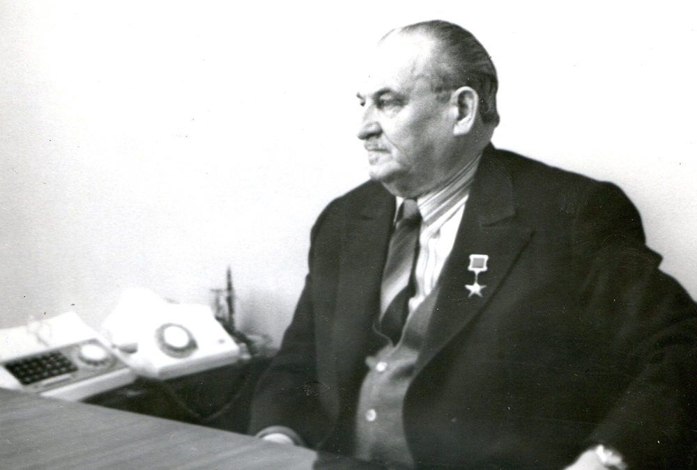
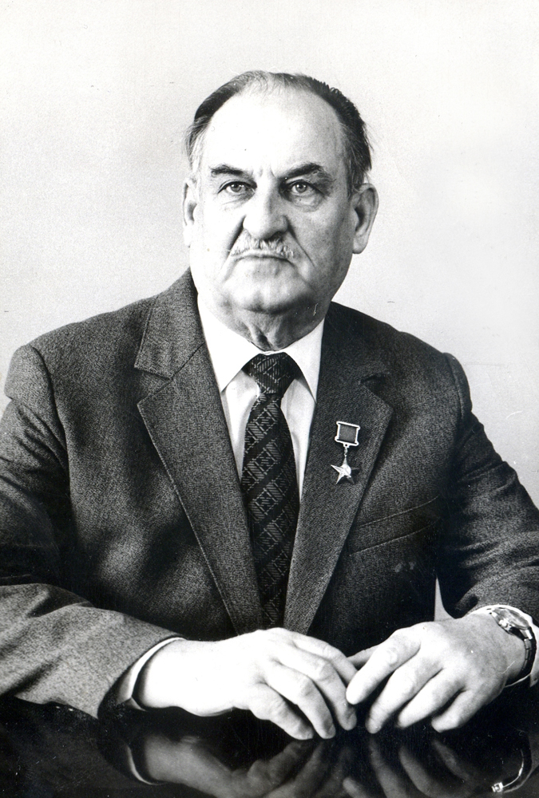

Развитие профобразования
роль Е.Н.Королёва.
Кузница кадров для промышленности

В 1970–1990-е годы Нижнекамск стремительно рос. Нефтехимические заводы нуждались в техниках-технологах, механиках, лаборантах, энергетиках. Энергостроительный техникум стал главной кузницей кадров. В 1994 году он был преобразован в Нижнекамский политехнический колледж (НПК).

Система профессионального образования была и остаётся ориентированной на реальный сектор экономики. Предприятия заказывали нужные специальности, студенты проходили практику на заводах, а выпускники получали распределение. Такая модель позволила Нижнекамску избежать дефицита рабочих кадров в годы бурного промышленного роста.